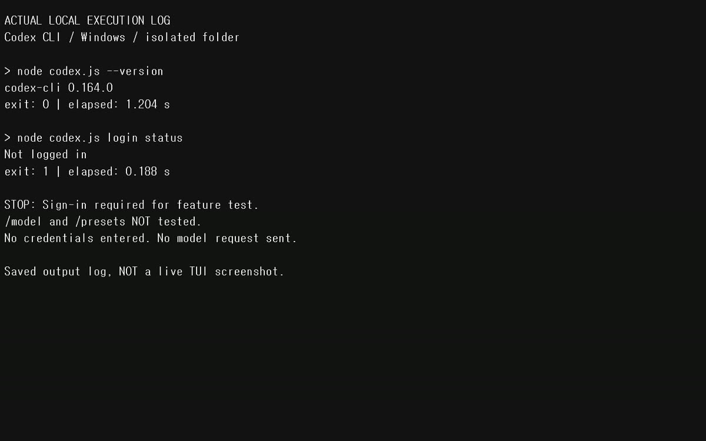
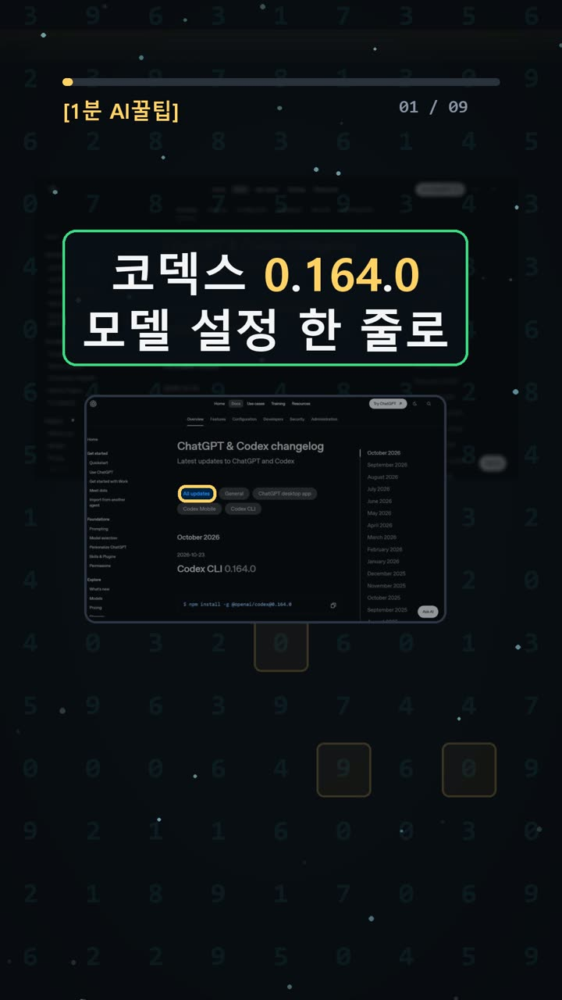
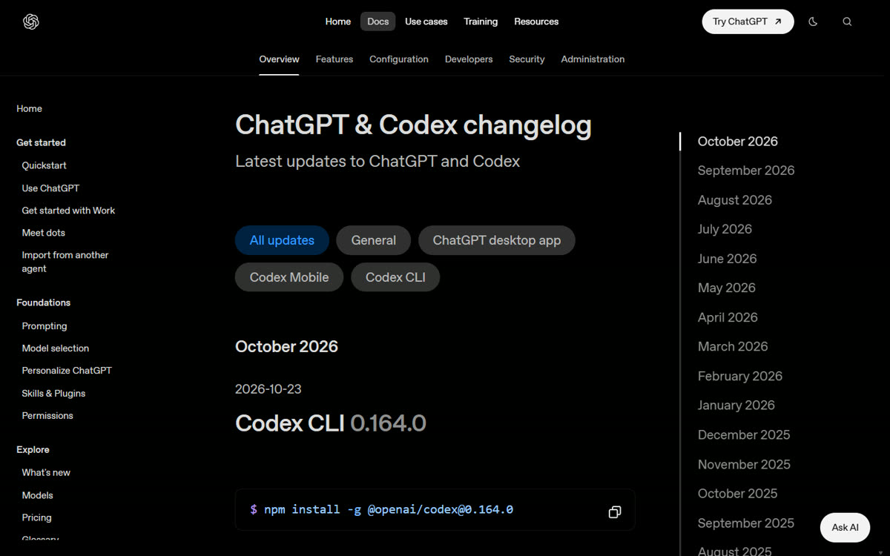
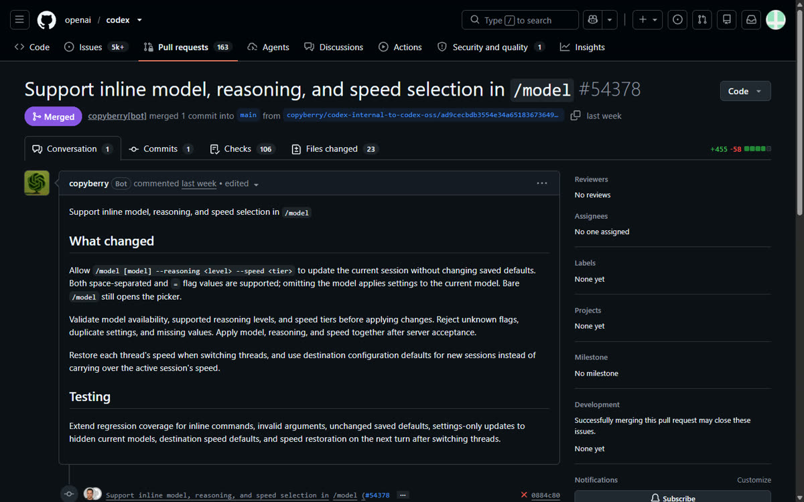

이 포스팅은 쿠팡 파트너스 및 토스쇼핑 쉐어링크 활동의 일환으로, 이에 따른 일정액의 수수료를 제공받습니다.
코덱스 모델·추론·속도 한 줄 설정 — Codex CLI 0.164.0

검증 범위 · 직접 확인 기록 · 이 글은 2026-10-25에 공식 출처를 열어 보고 우리 PC에서 직접 확인한 기록(확인 수준: partial)을 바탕으로 AI 도구와 함께 정리했습니다.
명령어·설정·실패 해결표 바로 보기 (무료 공개)명령어·설정·실패 해결표
| 구분 | 내용 | 해결 |
|---|---|---|
| 명령어 | /model | |
| 명령어 | /permissions | |
| 명령어 | /presets | |
| 명령어 | npm install -g @openai/codex@0.164.0 |
한눈에 보기
- 2026-10-23 공식 변경 기록을 보면, Codex CLI 0.164.0부터
/model뒤에 모델·추론 강도·속도를 한 줄로 적을 수 있습니다./permissions뒤에는 권한 프로필을 한 줄로 적습니다. - 자주 쓰는 프롬프트와 슬래시 명령(
/로 시작하는 명령)은 숫자 칸 10개짜리/presets에 저장합니다. 저장한 것은 키보드 메뉴로 불러옵니다. - 우리 윈도우 PC에서는 설치, 버전 확인, 로그인 화면까지만 직접 했습니다. 로그인 단계에서 멈췄기 때문에 새 기능은 아직 실제로 써 보지 못했습니다. 확인 수준은 partial입니다.

시작 전에 확인할 것
- 요금·계정: Codex CLI 패키지를 설치할 때는 돈을 내지 않았습니다. 다만 쓰려면 인증(로그인)이 필요합니다. 공식 인증 문서 원문은 "Sign in with ChatGPT for subscription access; Sign in with an API key for usage-based access"입니다. API 키로 쓰면 OpenAI Platform 표준 API 요금이 청구되고, 이 요금은 ChatGPT 요금제에 포함된 이용량과 따로 계산됩니다.
- 실행 화면의 로그인 안내에는 Plus·Pro·Business·Enterprise 요금제에 이용량이 포함된다고 적혀 있었습니다. 정확한 월 가격, 한도, 쓸 수 있는 모델과 속도는 요금제와 워크스페이스마다 다르니 직접 확인해야 합니다.
- 준비물: Node.js와 npm(자바스크립트 프로그램을 내려받아 설치해 주는 도구)이 있는 터미널(글자로 명령을 입력하는 창)이 필요합니다. 우리가 시험한 환경은 Windows, Node v26.5.0, npm 11.17.0입니다. 패키지에는 Node 16 이상이라고 적혀 있지만, 낮은 버전은 시험하지 않았습니다.
- 운영체제: 공식 설치 안내는 macOS/Linux, Windows, npm, Homebrew 선택지를 따로 둡니다. 우리는 윈도우에서 버전, 도움말, 로그인 선택 화면까지만 확인했습니다. 로그인 후 기능, WSL, 최소 윈도우 버전은 확인하지 못했습니다.
설치 방법
공식 문서 방법 (📄 공식 문서 기준, 이번에는 실행하지 않음)
1. 📄 버전을 정해서 설치합니다.
npm install -g @openai/codex@0.164.0
- 이게 보이면 성공: 공식 변경 기록에는 설치 완료 메시지 원문이 없습니다. 다음 단계에서 버전으로 확인합니다.
2. 📄 버전을 확인합니다.
codex --version
- 이게 보이면 성공: CLI 버전이 출력되고, 그 값이 0.164.0입니다.
3. 📄 프로젝트 폴더에서 codex를 실행합니다. 처음이라면 Sign in with ChatGPT를 고릅니다.
- 이게 보이면 성공: 브라우저 창이 열리고, 로그인하면 브라우저가 인증 정보를 Codex로 돌려줍니다.
우리가 실제로 한 방법 (✅ 직접 해 봄, 격리 설치)
컴퓨터 전체 설정을 건드리지 않으려고 -g(전역 설치, 컴퓨터 전체에 설치) 대신 빈 폴더 하나에만 설치했습니다.
1. ✅ PowerShell에서 빈 작업 폴더를 만들고 그 폴더로 이동합니다. 2. ✅ 지금 열린 PowerShell 창에서만 쓰는 설정을 넣습니다. 그다음 codex-home 폴더와 temp 폴더를 만듭니다. 시스템 환경변수는 바꾸지 않습니다.
$env:CODEX_HOME="$PWD\codex-home"; $env:npm_config_cache="$PWD\npm-cache"; $env:TEMP="$PWD\temp"; $env:TMP=$env:TEMP
3. ✅ 설치합니다.
npm install --prefix . --no-audit --no-fund --ignore-scripts @openai/codex@0.164.0
- 이게 보이면 성공: exit 0(정상 종료)과 패키지 2개 추가. 이 PC에서 한 번 해 보니 19.885초 걸렸습니다.
4. ✅ 버전을 확인합니다.
node .\node_modules\@openai\codex\bin\codex.js --version
- 이게 보이면 성공:
codex-cli 0.164.0 - 막히면:
.\node_modules\.bin\codex.cmd --version은 "지정된 경로를 찾을 수 없습니다"(exit 3)로 실패했습니다. 그래서 위 명령처럼 node로 직접 실행했습니다.
5. ✅ 실행합니다.
node .\node_modules\@openai\codex\bin\codex.js --no-daemon --no-alt-screen --sandbox read-only
- 이게 보이면 성공: v0.164.0 표시와 ChatGPT / Device Code / API key / Bedrock 인증 선택 화면이 나옵니다. 우리는 여기서 Ctrl+C로 종료했습니다.
사용 방법
아래는 모두 로그인 뒤에 하는 단계라 이번에는 실행하지 못했습니다. 모두 📄 공식 문서 기준입니다.
1. 📄 기존 메뉴 방식: 입력란에 /model을 치고 Enter를 누릅니다.
- 이게 보이면 성공: 내 계정과 워크스페이스에서 쓸 수 있는 모델만 보이는 선택 팝업이 열립니다.
2. 📄 팝업에 실제로 보이는 모델을 고릅니다. 공식 예시는 gpt-6-luna, gpt-6.1-sol입니다.
- 이게 보이면 성공: 대화 기록에 새 모델이 표시됩니다.
/status로 한 번 더 확인합니다.
3. 📄 새 한 줄 방식 (PR #54378):
/model [model] --reasoning <level> --speed <tier>
- 대괄호와 꺾쇠는 빈칸 표시라서 그대로 치지 않습니다. 띄어쓰기 형식과
=형식을 모두 지원합니다. 모델 이름을 빼면 지금 쓰는 모델의 설정만 바뀝니다. - 모델·강도·속도를 지원하는지 검증하고, 서버가 받아들인 뒤에 적용됩니다. 지금 대화(세션)만 바뀌고, 저장된 기본값은 그대로입니다.
4. 📄 권한 한 줄 설정 (PR #54383): 문법은 /permissions <profile-id>이고, 실제 profile-id를 넣습니다.
/permissions :read-only
- 권한 정책 확인 창이 추가로 뜰 수 있습니다. 전체 접근 확인, 기능 제한, Windows 샌드박스 설정을 건너뛰는 기능은 아닙니다.
5. 📄 /presets (PR #54380): 숫자 칸 10개와 편집기가 있습니다. 칸을 바꾸거나 지우기 전에는 확인을 묻습니다. 입력 중인 문구나 현재 모델·추론·속도 설정으로 만들 수 있고, tui.presets 설정에 저장됩니다.
- 정확한 단축키와 새 대화에서도 유지되는지는 확인하지 못해서 적지 않습니다.

우리가 직접 해 본 결과 (partial)
진행한 순서대로 적습니다.
1. 공식 주소 developers.openai.com/codex/changelog를 열었습니다. learn.chatgpt.com/docs/changelog로 넘어갔고, 2026-10-23 항목에서 0.164.0을 확인했습니다. 페이지를 여는 데 7.376초 걸렸는데, 이건 기능 수행 시간이 아닙니다. 2. 격리 설치에 성공했습니다(19.885초). 3. .cmd로 버전을 확인하는 데는 실패했고, node로 직접 실행해 성공했습니다(1.204초). --help도 성공했고, 여기서 --no-daemon과 --sandbox 옵션을 확인했습니다. 4. login status의 결과는 Not logged in(exit 1)이었습니다. 5. 프로그램 화면에 들어가 인증 선택 화면을 확인한 뒤 종료했습니다. 들어가서 보고 종료하기까지 20.067초였고, 이것도 시작 속도가 아닙니다.
/model 실제 변경, 상태 표시 확인, /permissions 적용, /presets 저장과 불러오기, 예전 방식과의 초 단위 비교는 하지 못했습니다. 그래서 "몇 초 단축" 같은 숫자는 없습니다.
예상과 다르게 막힌 곳도 있었습니다. 터미널 창을 직접 캡처하려 했지만 창이 닫히면서 실패했습니다. 아래 이미지는 실제 명령 출력을 크게 보여 준 로그 화면이며, 실행 중인 프로그램 화면이 아닙니다.
화제가 된 X 게시물은 다시 조회했을 때 조회 1,038,203회, 좋아요 7,801개였습니다. 다만 이 게시물은 여러 업데이트를 함께 다루고, 한 줄 /model이나 /presets를 구체적으로 설명하지 않습니다. 그래서 이 숫자를 이 기능만의 인기로 보지 않습니다.
한계도 있습니다. 윈도우 PC 한 대에서 한 번만 시도했고, 기능 검증은 로그인 전 단계까지만 했습니다.

자주 막히는 곳
codex.cmd에서 경로 오류가 날 때:node .\node_modules\@openai\codex\bin\codex.js로 직접 실행하면 됩니다. 오류의 원인은 확정하지 못했습니다.Not logged in이 나올 때: 브라우저에 ChatGPT가 로그인돼 있어도 새 설정 폴더(CODEX_HOME)의 CLI는 로그인 상태로 이어지지 않았습니다. CLI에서 따로 인증해야 합니다.- 윈도우 설치 명령을 찾을 때: 우리 자동 브라우저에서는 공식 페이지의 Windows 선택이 바뀌지 않아서 윈도우 전용 명령을 펼쳐 보지 못했습니다. 공식 설치 안내를 직접 열어 확인하세요.
- 문법을 그대로 따라 쳤을 때:
[model],<level>같은 빈칸 표시는 실제 값으로 바꿔서 입력합니다.
🧰 오늘의 실험실 생존 세트 — 밤새 실험 돌릴 때 쟁여 두는 것들


정리
Codex CLI 0.164.0은 모델·추론·속도와 권한을 메뉴 없이 한 줄로 바꾸고, 자주 쓰는 문구를 10칸에 저장하는 기능을 더했습니다. 문법과 동작 조건은 공식 PR로 확인했습니다. 우리는 설치와 실행까지만 해 봤고 실제 사용은 로그인 문제로 다음 기회로 남겼습니다. 짧은 영상은 유튜브 쇼츠에 있습니다.
이 글은 실제 확인 기록을 바탕으로 AI 도구와 함께 정리했습니다.
혹시 글에서 틀린 부분이나 고쳐야 할 부분이 보이면 유튜브·스레드 댓글로 알려 주시면 정말 감사하겠습니다. 바로 확인해서 고칠게요!
🛒 다시 보기: 오늘의 생존 세트
🎙️ AI 음성이 궁금하다면
우리 채널 내레이션은 타입캐스트를 쓰지만, 영어·다국어 AI 음성을 실험해 보고 싶다면 ElevenLabs도 많이 쓰여요.
[광고·제휴] ElevenLabs 둘러보기🎬 쇼츠로 다시 보기 · 🧵 함께 이야기하기
🧵 스레드 @alligatorxor에서 오늘 실험 이야기 나누기 · ▶ 유튜브 새AI실험노트 다른 쇼츠 보기 · 📒 실험노트 홈